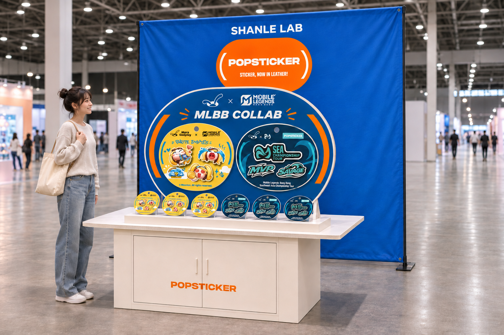

黑柜2000×2000×400与3000×3000背景布垂直90°，L形摆位；背景布采用MCT元素且无MLBB字标或Logo，保留中岛与射灯；图稿待评审。
查看更新版整体、背面及摆位
用户指定3000宽×2800高平脚支架，沿用原3000×3000布料并约200落地余量；黑柜2000×2000×400与背景垂直90°，灯数4＋4＋2。
查看当前效果与完整英文尺寸
2026-11-14 · 75cm桌高修订尺寸 · 开稿参考，非生产刀模
下载总包 ZIP · 设计师先读 · 尺寸册 PDF · 160cm取货3D校核
总包含展位效果、五页尺寸册、15个1:1毫米SVG画板、品牌参考与离线3D。下图为旧80cm效果，仅看摆位；开稿以75cm尺寸册为准。
